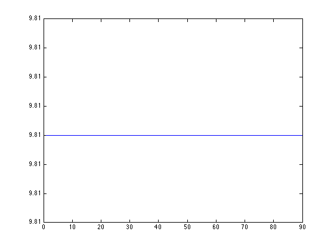

Contents
- clear all variables and close all previous figures
- Test the sensor measurements estimations
- identify sensor = segment matching
- Create the estimator and model...
- Prepare inputs for updating the kinematics information in the estimator
- Specify unknown wrenches
- The estimated sensor measurements
- Select sensors indices from iDynTree model
- compute predicted measurements
- DEBUG: plot debug data
- DEBUG: plot gravity as 3D vector in sensor frame
clear all variables and close all previous figures
clear
close all
clc
Test the sensor measurements estimations
Move left leg joint 0 from qMin to qMax and check 3D plots of acc. estimation from each sensor.
% Create the sensor names to test mtbSensorLinkName_right_leg = {'l_upper_leg_mtb_acc_10b1', ... 'l_upper_leg_mtb_acc_10b2', ... 'l_upper_leg_mtb_acc_10b3', ... 'l_upper_leg_mtb_acc_10b4', ... 'l_upper_leg_mtb_acc_10b5', ... 'l_upper_leg_mtb_acc_10b6', ... 'l_upper_leg_mtb_acc_10b7', ... 'l_lower_leg_mtb_acc_10b8', ... 'l_lower_leg_mtb_acc_10b9', ... 'l_lower_leg_mtb_acc_10b10', ... 'l_lower_leg_mtb_acc_10b11', ... 'l_foot_mtb_acc_10b12'}; % Possible joints to control: jointNameList = {'l_hip_pitch','l_hip_roll','l_hip_yaw', ... 'l_knee', ... 'l_ankle_pitch','l_ankle_roll'}; % correction for MTB mounted upside-down % some sensor are inverted in the model with respect to how are mounted on % the real robot mtbInvertedFrames = {true,true, ... true,true, ... true, ... false,false, ... true,true, ... true,true, ... true}; real_R_model = [-1, 0, 0; ... 0,-1, 0; ... 0, 0, 1]; % Gravity grav = [0.0;0.0;-9.81]; % time sequence of positions (90 positions. For instance can be 1 per degree) qSeq = zeros(length(jointNameList),length(1:1:90)); % time sequence of reference vectors (a ref vector can be either the % gravity, either a frame vector x, y or z. Useful for checking checking % frame). Gravity is the default value. refVec = zeros(3,length(1:1:90)); refVec(1,:) = grav(1); refVec(2,:) = grav(2); refVec(3,:) = grav(3); % Fill the time sequence of q here depending o the test: % - each column stands for a chain single configuration % - ech line a DoF test =6; switch test
identify sensor = segment matching
case 1 % Test 1: rotation of whole leg(l_hip_pitch) % [rotation due to movement OK!] qSeq(1,:) = (0:1:89)*pi/180; case 2 % Test 2: rotation of upper leg only % [10B1 ... 10B7 location OK!] qSeq(1,:) = (0:1:89)*pi/180; qSeq(4,:) = -(0:1:89)*pi/180; case 3 % Test 3: rotation of lower leg only % [10B8 ... 10B11 location OK!] qSeq(1,:) = 90*pi/180; qSeq(4,:) = -(90:-1:1)*pi/180; qSeq(5,:) = (0:1:89)*pi/180; case 4 % Test 4: rotation of foot only % [10B12 location OK!] qSeq(5,:) = (0:1:89)*pi/180; case 5 % Test 5: rotation of leg around l_hip_yaw % [x axis of 10B3,4 rot by pi. % 10B8 OK with offset. % 10B9,10,11 rot by pi/2. % 10B6,7 OK! % Others KO!] qSeq(3,:) = (0:1:89)*pi/180; case 6 % Test 6: verify 10B3, 10B4, 10B6 & 10B7. Upper leg horizontal, % rotation of leg around l_hip_roll % [z axis of 10B3 & 10B4 inverted. 10B6 & 10B7 OK! Others KO!] qSeq(1,:) = 90*pi/180; qSeq(2,:) = (0:1:89)*pi/180; otherwise
end % After 6 tests, we keep the inverting matrix and the acc. % 10B3,10B4,10B6,10B7 fr the upper leg, 10B8 for the lower leg, 10B12 for % the foot.
Create the estimator and model...
Create an estimator class, load the respective model from URDF file and set the robot state constant parameters
% Create estimator class estimator = iDynTree.ExtWrenchesAndJointTorquesEstimator(); % Load model and sensors from the URDF file estimator.loadModelAndSensorsFromFile('../models/iCubGenova02/iCubFull.urdf'); % Check if the model was correctly created by printing the model estimator.model().toString()
ans =
Model:
Links:
[0] root_link
[1] r_hip_1
[2] r_hip_2
[3] r_hip_3
[4] r_upper_leg
[5] r_lower_leg
[6] r_ankle_1
[7] r_ankle_2
[8] r_foot
[9] l_hip_1
[10] l_hip_2
[11] l_hip_3
[12] l_upper_leg
[13] l_lower_leg
[14] l_ankle_1
[15] l_ankle_2
[16] l_foot
[17] torso_1
[18] torso_2
[19] chest
[20] r_shoulder_1
[21] r_shoulder_2
[22] r_shoulder_3
[23] r_upper_arm
[24] r_elbow_1
[25] l_shoulder_1
[26] l_shoulder_2
[27] l_shoulder_3
[28] l_upper_arm
[29] l_elbow_1
[30] neck_1
[31] neck_2
[32] head
Frames:
[33] base_link --> root_link
[34] root_link_ems_acc_eb5 --> root_link
[35] root_link_ems_gyro_eb5 --> root_link
[36] r_upper_leg_ems_acc_eb8 --> r_upper_leg
[37] r_upper_leg_ems_acc_eb11 --> r_upper_leg
[38] r_upper_leg_ems_gyro_eb8 --> r_upper_leg
[39] r_upper_leg_ems_gyro_eb11 --> r_upper_leg
[40] r_upper_leg_mtb_acc_11b1 --> r_upper_leg
[41] r_upper_leg_mtb_acc_11b2 --> r_upper_leg
[42] r_upper_leg_mtb_acc_11b3 --> r_upper_leg
[43] r_upper_leg_mtb_acc_11b4 --> r_upper_leg
[44] r_upper_leg_mtb_acc_11b5 --> r_upper_leg
[45] r_upper_leg_mtb_acc_11b6 --> r_upper_leg
[46] r_upper_leg_mtb_acc_11b7 --> r_upper_leg
[47] r_lower_leg_ems_acc_eb9 --> r_lower_leg
[48] r_lower_leg_ems_gyro_eb9 --> r_lower_leg
[49] r_lower_leg_mtb_acc_11b8 --> r_lower_leg
[50] r_lower_leg_mtb_acc_11b9 --> r_lower_leg
[51] r_lower_leg_mtb_acc_11b10 --> r_lower_leg
[52] r_lower_leg_mtb_acc_11b11 --> r_lower_leg
[53] r_foot_mtb_acc_11b12 --> r_foot
[54] r_foot_mtb_acc_11b13 --> r_foot
[55] r_sole --> r_foot
[56] l_upper_leg_ems_acc_eb6 --> l_upper_leg
[57] l_upper_leg_ems_acc_eb10 --> l_upper_leg
[58] l_upper_leg_ems_gyro_eb6 --> l_upper_leg
[59] l_upper_leg_ems_gyro_eb10 --> l_upper_leg
[60] l_upper_leg_mtb_acc_10b1 --> l_upper_leg
[61] l_upper_leg_mtb_acc_10b2 --> l_upper_leg
[62] l_upper_leg_mtb_acc_10b3 --> l_upper_leg
[63] l_upper_leg_mtb_acc_10b4 --> l_upper_leg
[64] l_upper_leg_mtb_acc_10b5 --> l_upper_leg
[65] l_upper_leg_mtb_acc_10b6 --> l_upper_leg
[66] l_upper_leg_mtb_acc_10b7 --> l_upper_leg
[67] l_lower_leg_ems_acc_eb7 --> l_lower_leg
[68] l_lower_leg_ems_gyro_eb7 --> l_lower_leg
[69] l_lower_leg_mtb_acc_10b8 --> l_lower_leg
[70] l_lower_leg_mtb_acc_10b9 --> l_lower_leg
[71] l_lower_leg_mtb_acc_10b10 --> l_lower_leg
[72] l_lower_leg_mtb_acc_10b11 --> l_lower_leg
[73] l_foot_mtb_acc_10b12 --> l_foot
[74] l_foot_mtb_acc_10b13 --> l_foot
[75] l_sole --> l_foot
[76] chest_ems_acc_eb1 --> chest
[77] chest_ems_gyro_eb1 --> chest
[78] chest_ems_acc_eb2 --> chest
[79] chest_ems_gyro_eb2 --> chest
[80] chest_ems_acc_eb3 --> chest
[81] chest_ems_gyro_eb3 --> chest
[82] chest_ems_acc_eb4 --> chest
[83] chest_ems_gyro_eb4 --> chest
[84] chest_mtb_acc_0b7 --> chest
[85] chest_mtb_acc_0b8 --> chest
[86] chest_mtb_acc_0b9 --> chest
[87] chest_mtb_acc_0b10 --> chest
[88] r_upper_arm_mtb_acc_2b10 --> r_upper_arm
[89] r_upper_arm_mtb_acc_2b11 --> r_upper_arm
[90] r_upper_arm_mtb_acc_2b12 --> r_upper_arm
[91] r_upper_arm_mtb_acc_2b13 --> r_upper_arm
[92] r_forearm_mtb_acc_2b7 --> r_elbow_1
[93] r_forearm_mtb_acc_2b8 --> r_elbow_1
[94] r_forearm_mtb_acc_2b9 --> r_elbow_1
[95] l_upper_arm_mtb_acc_1b10 --> l_upper_arm
[96] l_upper_arm_mtb_acc_1b11 --> l_upper_arm
[97] l_upper_arm_mtb_acc_1b12 --> l_upper_arm
[98] l_upper_arm_mtb_acc_1b13 --> l_upper_arm
[99] l_forearm_mtb_acc_1b7 --> l_elbow_1
[100] l_forearm_mtb_acc_1b8 --> l_elbow_1
[101] l_forearm_mtb_acc_1b9 --> l_elbow_1
[102] imu_frame --> head
[103] l_foot_dh_frame --> l_foot
[104] r_foot_dh_frame --> r_foot
Joints:
[0] r_hip_pitch (dofs: 1) : root_link<-->r_hip_1
[1] r_hip_roll (dofs: 1) : r_hip_1<-->r_hip_2
[2] r_hip_yaw (dofs: 1) : r_hip_3<-->r_upper_leg
[3] r_knee (dofs: 1) : r_upper_leg<-->r_lower_leg
[4] r_ankle_pitch (dofs: 1) : r_lower_leg<-->r_ankle_1
[5] r_ankle_roll (dofs: 1) : r_ankle_1<-->r_ankle_2
[6] l_hip_pitch (dofs: 1) : root_link<-->l_hip_1
[7] l_hip_roll (dofs: 1) : l_hip_1<-->l_hip_2
[8] l_hip_yaw (dofs: 1) : l_hip_3<-->l_upper_leg
[9] l_knee (dofs: 1) : l_upper_leg<-->l_lower_leg
[10] l_ankle_pitch (dofs: 1) : l_lower_leg<-->l_ankle_1
[11] l_ankle_roll (dofs: 1) : l_ankle_1<-->l_ankle_2
[12] torso_pitch (dofs: 1) : root_link<-->torso_1
[13] torso_roll (dofs: 1) : torso_1<-->torso_2
[14] torso_yaw (dofs: 1) : torso_2<-->chest
[15] r_shoulder_pitch (dofs: 1) : chest<-->r_shoulder_1
[16] r_shoulder_roll (dofs: 1) : r_shoulder_1<-->r_shoulder_2
[17] r_shoulder_yaw (dofs: 1) : r_shoulder_2<-->r_shoulder_3
[18] r_elbow (dofs: 1) : r_upper_arm<-->r_elbow_1
[19] l_shoulder_pitch (dofs: 1) : chest<-->l_shoulder_1
[20] l_shoulder_roll (dofs: 1) : l_shoulder_1<-->l_shoulder_2
[21] l_shoulder_yaw (dofs: 1) : l_shoulder_2<-->l_shoulder_3
[22] l_elbow (dofs: 1) : l_upper_arm<-->l_elbow_1
[23] neck_pitch (dofs: 1) : chest<-->neck_1
[24] neck_roll (dofs: 1) : neck_1<-->neck_2
[25] neck_yaw (dofs: 1) : neck_2<-->head
[26] r_leg_ft_sensor (dofs: 0) : r_hip_2<-->r_hip_3
[27] r_foot_ft_sensor (dofs: 0) : r_ankle_2<-->r_foot
[28] l_leg_ft_sensor (dofs: 0) : l_hip_2<-->l_hip_3
[29] l_foot_ft_sensor (dofs: 0) : l_ankle_2<-->l_foot
[30] r_arm_ft_sensor (dofs: 0) : r_shoulder_3<-->r_upper_arm
[31] l_arm_ft_sensor (dofs: 0) : l_shoulder_3<-->l_upper_arm
Prepare inputs for updating the kinematics information in the estimator
Compute the kinematics information necessary for the accelerometer sensor measurements estimation. We assume the robot root link is fixed to the ground (steady kart pole). We then assume to know the gravity (ground truth) projected on the frame (base_link) fixed to the root link. For more info on iCub frames check: http://wiki.icub.org/wiki/ICub_Model_naming_conventions.
% Reference vector refVec_idyn = iDynTree.Vector3(); % Get model DOF and init joints positions vector dofs = estimator.model.getNrOfDOFs(); qSeqModel = zeros(dofs,size(qSeq,2)); % create joint position iDynTree objects % Note: 'JointPosDoubleArray' is a special type for future evolution which % will handle quaternions. But for now the type has the format as % 'JointDOFsDoubleArray'. qi_idyn = iDynTree.JointPosDoubleArray(dofs); dqi_idyn = iDynTree.JointDOFsDoubleArray(dofs); d2qi_idyn = iDynTree.JointDOFsDoubleArray(dofs); % Base link index for later applying forward kynematics base_link_index = estimator.model.getFrameIndex('base_link');
Specify unknown wrenches
% We need to set the location of the unknown wrench. We express the unknown % wrench at the origin of the l_sole frame unknownWrench = iDynTree.UnknownWrenchContact(); unknownWrench.unknownType = iDynTree.FULL_WRENCH; % the position is the origin, so the conctact point wrt to base_link is zero unknownWrench.contactPoint.zero(); % The fullBodyUnknowns is a class storing all the unknown external wrenches % acting on a class: we consider the pole reaction on the base link as the only % external force. % Build an empty list. fullBodyUnknowns = iDynTree.LinkUnknownWrenchContacts(estimator.model()); fullBodyUnknowns.clear(); fullBodyUnknowns.addNewContactInFrame(estimator.model(),base_link_index,unknownWrench); % Print the unknowns to make sure that everything is properly working fullBodyUnknowns.toString(estimator.model())
ans = Unknown contacts on link root_link: One full wrench contact with pos: x 0 y 0 z 0:
The estimated sensor measurements
`estimator.sensors()` gets used sensors (returns `SensorList`) ex: `estimator.sensors.getNrOfSensors(iDynTree.ACCELEROMETER)` `estimator.sensors.getSensor(iDynTree.ACCELEROMETER,1)`
estMeasurements = iDynTree.SensorsMeasurements(estimator.sensors());
% Memory allocation for output variables
estJointTorques = iDynTree.JointDOFsDoubleArray(dofs);
estContactForces = iDynTree.LinkContactWrenches(estimator.model());
Select sensors indices from iDynTree model
Go through 'mtbSensorLinkName_right_leg' and build the sensor list. This is a list of indexes, that will be later used for retrieving the sensor predicted measurements.
sensorsIdxListModel = zeros(length(mtbSensorLinkName_right_leg),1); for sensorIdx = 1:length(mtbSensorLinkName_right_leg) sensorsIdxListModel(sensorIdx) = estimator.sensors.getSensorIndex(iDynTree.ACCELEROMETER,... char(mtbSensorLinkName_right_leg{sensorIdx})); end jointModelIdxMatlab = ones(length(jointNameList),1); for jointNameIdx = 1:length(jointNameList) jointModelIdxMatlab(jointNameIdx) = 1 + estimator.model.getJointIndex(jointNameList{jointNameIdx}); end qSeqModel(jointModelIdxMatlab,:) = qSeq(:,:);
compute predicted measurements
We compute here the final cost 'e'. As it is a sum of norms, we can also compute it as : v^\top \dot v , v being a vector concatenation of all the components of the sum. Refer to equation(1) in https://bitbucket.org/ gnuno/jointoffsetcalibinertialdoc/src/6c2f99f3e1be59c8021e4fc5e522fa21bdd97037/ Papers/PaperOnOffsetsCalibration.svg?at=fix/renderingMindmaps
sensEstNormMat = zeros(size(qSeqModel,2),length(sensorsIdxListModel)); sensEstCell = cell(size(qSeqModel,2),length(sensorsIdxListModel)); for qIdx = 1:size(qSeqModel,2) % Fill iDynTree joint vectors. % Warning!! iDynTree takes in input **radians** based units, % while the iCub port stream **degrees** based units. qi_idyn.fromMatlab(qSeqModel(:,qIdx)); dqi_idyn.fromMatlab(zeros(dofs,1)); d2qi_idyn.fromMatlab(zeros(dofs,1)); % Update the kinematics information in the estimator refVec_idyn.fromMatlab(refVec(:,qIdx)); estimator.updateKinematicsFromFixedBase(qi_idyn,dqi_idyn,d2qi_idyn,base_link_index,refVec_idyn); % run the estimation estimator.computeExpectedFTSensorsMeasurements(fullBodyUnknowns,estMeasurements,estContactForces,estJointTorques); % Get predicted and measured sensor data for each sensor referenced in % 'sensorsIdxList' and build a single 'diff' vector for the whole data set. for acc_i = 1:length(sensorsIdxListModel) % get predicted measurement on sensor frame estimatedSensorLinAcc = iDynTree.LinearMotionVector3(); estMeasurements.getMeasurement(iDynTree.ACCELEROMETER,sensorsIdxListModel(acc_i),estimatedSensorLinAcc); sensEst = estimatedSensorLinAcc.toMatlab; % correction for MTB mounted upside-down if mtbInvertedFrames{acc_i} sensEst = real_R_model*sensEst; end sensEstCell{qIdx,acc_i} = sensEst'; sensEstNormMat(qIdx,acc_i) = norm(sensEst,2); end end
DEBUG: plot debug data
figure('Name', '||sensor estim|| (blue)'); plot(sensEstNormMat,'b');
DEBUG: plot gravity as 3D vector in sensor frame
origin=zeros(size(sensEstCell,1),3); figure('Name', '3D vectors sensor_meas (red) & sensor_est (blue)'); colormap(winter(size(sensEstCell,1))); for acc_i = 1:size(sensEstCell,2) subplot(3,round(size(sensEstCell,2)/3),acc_i); Vest=cell2mat(sensEstCell(:,acc_i)); quiver3(origin(:,1),origin(:,2),origin(:,3),Vest(:,1),Vest(:,2),Vest(:,3),'color',[0 0 1]); title(['acc. ' num2str(acc_i)]); xlabel('x'); ylabel('y'); zlabel('z'); axis equal; axis vis3d; end